전기기능사 (2012-04-08 기출문제)
1과목: 전기 이론
1. 100[KVA] 단상변압기 2대를 V결선하여 3상 전력을 공급할 때의 출력은?
- 17.3[KVA]
- 86.6[KVA]
- 173.2[KVA]
- 346.8[KVA]
(정답률: 69%)

2. 어떤 정현파 교류의 최대값이 Vm = 220[V] 이면 평균값 Va는?
- 약 120.4[V]
- 약 125.4[V]
- 약 127.3[V]
- 약 140.1[V]
(정답률: 57%)
3. 어떤 콘덴서에 전압 20[V]를 가할 때 전하 800[μC]이 축적되었다면 이 때 축적되는 에너지는?
- 0.008[J]
- 0.16[J]
- 0.8[J]
- 160[J]
(정답률: 40%)
4. 진공 중에 두 자극 m1, m2 를 r[m]의 거리에 놓았을 때 작용하는 힘 F의 식으로 옳은 것은?
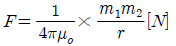
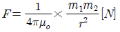
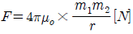
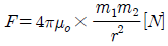
(정답률: 69%)
5. 220[V]용 100[W] 전구와 200[W] 전구를 직렬로 연결 하여 220[V]의 전원에 연결하면?
- 두 전구의 밝기가 같다.
- 100[W]의 전구가 더 밝다.
- 200[W]의 전구가 더 밝다.
- 두 전구 모두 안 켜진다.
(정답률: 74%)
6. 2개의 코일을 서로 근접시켰을 때 한 쪽 코일의 전류가 변화하면 다른 쪽 코일에 유도 기전력이 발생하는 현상을 무엇이라고 하는가?
- 상호 결합
- 자체유도
- 상호 유도
- 자체 결합
(정답률: 81%)
7. 어떤 전지에서 5[A]의 전류가 10분간 흘렀다면 이 전지에서 나온 전기량은?
- 0.83[C]
- 50[C]
- 250[C]
- 3000[C]
(정답률: 78%)
8. “물질 중의 자유전자가 과잉된 상태”란?
- (-) 대전상태
- (+) 대전상태
- 발열상태
- 중성상태
(정답률: 80%)
9. R = 4[Ω], ωL=3[Ω]의 직렬회로에 V = 100 √2 sinωt + 30 √2 sin3ωt[V] 의 전압을 가할 때 전력은 약 몇 [W]인가?
- 1170[W]
- 1563[W]
- 1637[W]
- 2116[W]
(정답률: 40%)
10. 그림의 브리지 회로에서 평형이 되었을 때의 CX는?
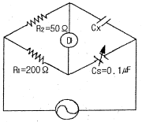
- 0.1[μF]
- 0.2[μF]
- 0.3[μF]
- 0.4[μF]
(정답률: 79%)
11. 기전력이 V0 , 내부저항이 r[Ω]인 n개의 전지를 직렬 연결하였다. 전체 내부저항은 얼마인가?
- r/n
- nr
- r/n2
- nr2
(정답률: 74%)
12. △결선인 3상 유도 전동기의 상전압(Vp)과 상전류(Ip) 를 측정하였더니 각각 200[V], 30[A]이었다. 이 3상 유도 전동기의 선간전압(Vl)과 선전류(Il)의 크기는 각각 얼마인가?
- Vl = 200[V], Il = 30[A]
- Vl = 200√3[V], Il = 30[A]
- Vl = 200√3[V], Il = 30√3[A]
- Vl = 200[V], Il = 30√3[A]
(정답률: 57%)
13. 용량을 변화 시킬 수 있는 콘덴서는?
- 바리콘
- 전해 콘덴서
- 마일러 콘덴서
- 세라믹 콘덴서
(정답률: 67%)
14. 자기 인덕턴스 200[mH], 450[mH]인 두 코일의 상호 인덕턴스는 60[mH]이다. 두 코일의 결합계수는?
- 0.1
- 0.2
- 0.3
- 0.4
(정답률: 53%)
15. 그림의 병렬 공진회로에서 공진 임피던스 Z0[Ω]은?
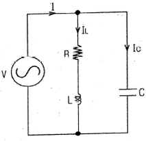
- L/CR
- CL/R
- R/CL
- CR/L
(정답률: 37%)
16. 자기력선에 대한 설명으로 옳지 않은 것은?
- 자석의 N극에서 시작하여 S극에서 끝난다.
- 자기장의 방향은 그 점을 통과하는 자기력선의 방향으로 표시한다.
- 자기력선은 상호간에 교차한다.
- 자기장의 크기는 그 점에 있어서의 자기력선의 밀도를 나타낸다.
(정답률: 83%)
17. 줄의 법칙에서 발열량 계산식을 옳게 표시한 것은?
- H = I2R[J]
- H = I2R2t[J]
- H = I2R2[J]
- H = I2Rt[J]
(정답률: 77%)
18. 플레밍의 왼손법칙에서 전류의 방향을 나타내는 손가락은?
- 엄지
- 검지
- 중지
- 약지
(정답률: 84%)
19. 자속밀도 B=0.2[Wb/m2]의 자장 내에 길이 2[m], 폭 1[m], 권수 5회의 구형 코일이 자장과 30°의 각도로 놓여 있을 때 코일이 받는 회전력은? (단, 이 코일에 흐르는 전류는 2[A]이다.)
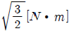
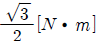
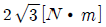
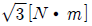
(정답률: 46%)
20. 직류 250[V]의 전압에 두 개의 150[V]용 전압계를 직렬로 접속하여 측정하면 각 계기의 지시값 V1, V2는 각 각 몇[V]인가? (단, 전압계의 내부저항은 V1=15[kΩ], V2=10[kΩ]이다.)
- V1=250, V2=150
- V1=150, V2=100
- V1=100, V2=150
- V1=150, V2=250
(정답률: 58%)
2과목: 전기 기기
21. 직류기의 손실 중 기계손에 속하는 것은?
- 풍손
- 와전류손
- 히스테리시스손
- 표유 부하손
(정답률: 48%)
22. 직류발전기를 구성하는 부분 중 정류자란?
- 전기자와 쇄교하는 자속을 만들어 주는 부분
- 자속을 끊어서 기전력을 유기하는 부분
- 전기자 권선에서 생긴 교류를 직류로 바꾸어 주는부분
- 계자 권선과 외부 회로를 연결시켜 주는 부분
(정답률: 71%)
23. 변압기 내부 고장 시 발생하는 기름의 흐름변화를 검출하는 브흐홀츠 계전기의 설치위치로 알맞은 것은?
- 변압기 본체
- 변압기의 고압측 부싱
- 컨서베이터 내부
- 변압기 본체와 컨서베이터를 연결하는 파이프
(정답률: 80%)
24. 주파수 60[Hz]를 내는 발전용 원동기인 터빈 발전기의 최고 속도는 얼마인가?
- 1800[rpm]
- 2400[rpm]
- 3600[rpm]
- 4800[rpm]
(정답률: 79%)
25. 분상기동형 단상 유도전동기 원심개폐기의 작동 시기는 회전자 속도가 동기속도의 몇 [%] 정도인가?
- 10~30[%]
- 40~50[%]
- 60~80[%]
- 90~100[%]
(정답률: 58%)
26. 동기 전동기를 자기 기동법으로 기동시킬 때 계자 회로는 어떻게 하여야 하는가?
- 단락시킨다.
- 개방시킨다.
- 직류를 공급한다.
- 단상교류를 공급한다.
(정답률: 64%)
27. 직류 복권 발전기를 병렬 운전할 때 반드시 필요한 것은?
- 과부하 계전기
- 균압선
- 용량이 같을 것
- 외부특성 곡선이 일치 할 것
(정답률: 67%)
28. 유도 전동기에 대한 설명 중 옳은 것은?
- 유도 발전기일 때의 슬립은 1보다 크다.
- 유도 전동기의 회전자 회로의 주파수는 슬립에 반비례 한다.
- 전동기 슬립은 2차 동손을 2차 입력으로 나눈 것과 같다.
- 슬립은 크면 클수록 2차 효율은 커진다.
(정답률: 44%)
29. 동기 전동기의 특징으로 잘못된 것은?
- 일정한 속도로 운전이 가능하다.
- 난조가 발생하기 쉽다.
- 역률을 조정하기 힘들다.
- 공극이 넓어 기계적으로 견고하다.
(정답률: 51%)
30. 계자 권선이 전기자와 접속되어 있지 않은 직류기는?
- 직권기
- 분권기
- 복권기
- 타여자기
(정답률: 76%)
31. 동기기를 병렬운전 할 때 순환전류가 흐르는 원인은?
- 기전력의 저항이 다른 경우
- 기전력의 위상이 다른 경우
- 기전력의 전류가 다른 경우
- 기전력의 역률이 다른 경우
(정답률: 68%)
32. 반도체 정류 소자로 사용할 수 없는 것은?
- 게르마늄
- 비스무트
- 실리콘
- 산화구리
(정답률: 48%)
33. 단상 전파 사이리스터 정류회로에서 부하가 큰 인덕턴스가 있는 경우, 점호각이 60° 일 때의 정류 전압은 약 몇 [V]인가?(단, 전원측 전압의 실효값은 100[V]이고 직류측 전류는 연속이다.)
- 141
- 100
- 85
- 45
(정답률: 34%)
34. 변압기 철심에는 철손을 적게 하기 위하여 철이 몇 [%]인 강판을 사용하는가?
- 약 50~55[%]
- 약 60~70[%]
- 약 76~86[%]
- 약 96~97[%]
(정답률: 55%)
35. 전기자 반작용이란 전기자 전류에 의해 발생한 기자력이 주자속에 영향을 주는 현상으로 다음 중 전기자반작용의 영향이 아닌 것은?
- 전기적 중성축 이동에 의한 정류의 약화
- 기전력의 불균일에 의한 정류자편간 전압의 상승
- 주 자속 감소에 의한 기전력감소
- 자기 포화 현상에 의한 자속의 평균치 증가
(정답률: 46%)
36. 2대의 동기 발전기가 병렬운전하고 있을 때 동기화 전류가 흐르는 경우는?
- 기전력의 크기에 차가 있을 때
- 기전력의 위상에 차가 있을 때
- 부하분담에 차가 있을 때
- 기전력의 파형에 차가 있을 때
(정답률: 65%)
37. 직류 전동기에서 전부하 속도가 1500[rpm], 속도 변동률이 3[%]일 때 무부하 회전 속도는 몇 [rpm]인가?
- 1455
- 1410
- 1545
- 1590
(정답률: 48%)
38. 3상 유도전동기의 슬립의 범위는?
- 0 < S < 1
- -1 < S < 0
- 1 < S < 2
- 0 < S <2
(정답률: 76%)
39. 단상 전파 정류회로에서 직류 전압의 평균값으로 가장 적당한 것은?(단, E는 교류 전압의 실효값)
- 1.35E[V]
- 1.17E[V]
- 0.9E[V]
- 0.45E[V]
(정답률: 59%)
40. 직류 발전기 전기자의 구성으로 옳은 것은?
- 전기자 철심, 정류자
- 전기자 권선, 전기자 철심
- 전기자 권선, 계자
- 전기자 철심, 브러시
(정답률: 53%)
3과목: 전기 설비
41. 도로를 횡단하여 시설하는 지선의 높이는 지표상 몇 [m]이상이어야 하는가?
- 5[m]
- 6[m]
- 8[m]
- 10[m]
(정답률: 63%)
42. 전선 약호가 CN-CV-W인 케이블의 품명은?
- 동심 중성선 수밀형 전력케이블
- 동심 중성선 차수형 전력케이블
- 동심 중성선 수밀형 저독성 난연 전력케이블
- 동심 중성선 차수형 저독성 난연 전력케이블
(정답률: 48%)
43. 제1종 금속에 가요전선관의 두께는 최소 몇 [mm] 이상이어야 하는가?
- 0.8
- 1.2
- 1.6
- 2.0
(정답률: 28%)
44. 플로어 덕트 공사의 설명 중 옳지 않은 것은?
- 덕트 상호간 접속은 견고하고 전기적으로 완전하게 접속 하여야 한다.
- 덕트의 끝 부분은 막는다.
- 덕트 및 박스 기타 부속품은 물이 고이는 부분이 없도록 시설하여야 한다.
- 플로어 덕트는 특별 제3종 접지공사로 하여야 한다.
(정답률: 70%)
45. 500[Kw]의 설비 용량을 갖춘 공장에서 정격전압 3상 24[kV], 역률 80[%]일 때의 차단기 정격 전류는 약 몇 [A]인가?
- 8[A]
- 15[A]
- 25[A]
- 30[A]
(정답률: 40%)
46. 전선을 접속하는 방법으로 틀린 것은?
- 전기 저항이 증가되지 않아야 한다.
- 전선의 세기는 30[%] 이상 감소시키지 않아야 한다.
- 접속 부분은 와이어 커넥터 등 접속 기구를 사용하거나 납땜을 한다.
- 알루미늄을 접속할 때는 고시된 규격에 맞는 접속관 등의 접속 기구를 사용한다.
(정답률: 76%)
47. 굵은 전선을 절단할 때 사용하는 전기공사용 공구는?
- 프레셔 툴
- 녹 아웃 펀치
- 파이프 커터
- 클리퍼
(정답률: 71%)
48. 무대, 무대 및, 오케스트라 박스, 영사실, 기타 사람이나 무대 도구가 접촉할 우려가 있는 장소에 시설하는 저압 옥내배선, 전구선 또는 이동전선은 사용 전압이 몇[V] 미만이어야 하는가?
- 60[V]
- 110[V]
- 220[V]
- 400[V]
(정답률: 78%)
49. 실내전체를 균일하게 조명하는 방식으로 광원을 일정한 간격으로 배치하며 공장, 학교, 사무실 등에서 채용되는 조명방식은?
- 국부조명
- 전반조명
- 직접조명
- 간접조명
(정답률: 62%)
50. 다음의 심벌 명칭은 무엇인가?
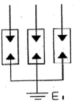
- 파워퓨즈
- 단로기
- 피뢰기
- 고압 컷아웃 스위치
(정답률: 64%)
51. 금속몰드 배선의 사용전압은 몇 [V] 미만이어야 하는가?
- 150
- 220
- 400
- 600
(정답률: 74%)
52. 네온 변압기를 넣는 금속함의 접지공사는?(관련 규정 개정전 문제로 여기서는 기존 정답인 3번을 누르면 정답 처리됩니다. 자세한 내용은 해설을 참고하세요.)
- 제1종 접지공사
- 제2종 접지공사
- 제3종 접지공사
- 특별 제3종 접지공사
(정답률: 68%)
53. 캡타이어 케이블을 조영재의 옆면에 따라 시설하는 경우 지지점 간의 거리는 얼마 이하로 하는가?
- 2[m]
- 3[m]
- 1[m]
- 1.5[m]
(정답률: 47%)
54. 전로이외를 흐르는 전류로서 전로의 절연체 내부 및 표면과 공간을 통하여 선간 또는 대지사이를 흐르는 전류를 무엇이라 하는가?
- 지락전류
- 누설전류
- 정격전류
- 영상전류
(정답률: 63%)
55. 배전용 전기기계기구인 COS(컷아웃스위치)의 용도로 알맞은 것은?
- 배전용 변압기의 1차측에 시설하여 변압기의 단락 보호용으로 쓰인다.
- 배전용 변압기의 2차측에 시설하여 변압기의 단락 보호용으로 쓰인다.
- 배전용 변압기의 1차측에 시설하여 배전 구역 전환용으로 쓰인다.
- 배전용 변압기의 2차측에 시설하여 배전 구역 전환용으로 쓰인다.
(정답률: 56%)
56. 금속관 공사에 사용되는 부품이 아닌 것은?
- 새들
- 덕트
- 로크 너트
- 링 리듀서
(정답률: 53%)
57. 구리 전선과 전기 기계기구 단자를 접속하는 경우에 진동 등으로 인하여 헐거워질 염려가 있는 곳에는 어떤 것을 사용하여 접속하여야 하는가?
- 평와셔 2개를 끼운다.
- 스프링 와셔를 끼운다.
- 코드 스패너를 끼운다.
- 정 슬리브를 끼운다.
(정답률: 83%)
58. 화약류 저장장소의 배선공사에서 전용 개폐기에서 화약류 저장소의 인입구까지는 어떤 공사를 하여야 하는가?
- 케이블을 사용한 옥측 전선로
- 금속관을 사용한 지중 전선로
- 케이블을 사용한 지중 전선로
- 금속관을 사용한 옥측 전선로
(정답률: 63%)
59. 수.변전 설비에서 전력퓨즈의 용단 시 결상을 방지하는 목적으로 사용하는 것은?
- 자동 고장 구분 개폐기
- 선로 개폐기
- 부하 개폐기
- 기중 부하 개폐기
(정답률: 41%)
60. 합성수지관 상호 및 관과 박스는 접속 시에 삽입하는 깊이를 관 바깥지름의 몇 배 이상으로 하여야 하는가?(단, 접착제를 사용하지 않은 경우이다.)
- 0.2
- 0.5
- 1
- 1.2
(정답률: 75%)